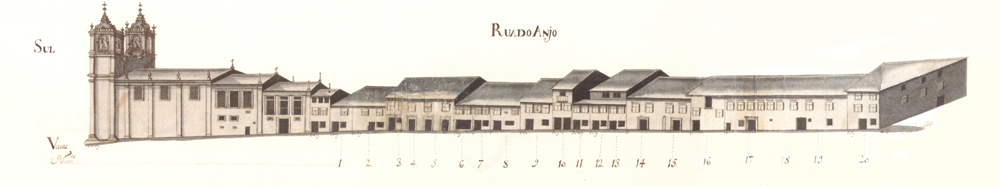

Campo de São Tiago - Sul

Rua do Anjo - Sul.Imagem atual da RuaImagem atual da Rua
Grande largo mandado abrir por D. Diogo de Sousa, em frente à porta da muralha que tem o mesmo nome.
Ponto de chegada da estrada do Porto, que subia a rua dos Pelames, este campo passou a ter uma maior importância a partir da construção das novas instalações do Colégio de S. Paulo (na década de 1560-1570) sobre a muralha, no local onde agora se encontra o Seminário de Santiago. Este edifício, contudo, tinha apenas duas fiadas corridas de janelas abertas para ele.
Rapidamente todo este espaço foi preenchido. Com D. Frei Bartolomeu dos Mártires a zona envolvente ao Colégio (ruas dos Pelames, rua S. Paulo, largo de S. Paulo e campo de S. Tiago) foi limpa das prostitutas e dos ociosos que aí habitavam, para neles poderem viver, em melhor ambiente, os estudantes que chegaram a atingir um número máximo de 2000 alunos.
Em 1623 a Câmara mandou construir uma fonte «cêrca da torre e porta de S. Tiago e em frente da rua dos Pellames», que foi removida em 1745, por determinação do Arcebispo D. José de Bragança, fazendo-se então o actual chafariz.
Em 1759, com a expulsão dos Jesuítas, a quem fora confiado o ensino neste colégio, o campo de S. Tiago deverá ter perdido grande parte da sua vida.
Em 1750 no lado Sul deste largo havia onze casas, todas prazos do Cabido, que se podiam dividir em três grupos: um, mais pobre, (casas dos prazos 5 a 11) de desenho de fachada simples, com janelas do tipo bracarense, parcialmente cobertas por gelosias; outro (casas dos prazos 2 a 4) mais cuidado, com portas com rebordo saliente e frisos, também de pedra, sobre as janelas; e o terceiro, formado pela belíssima casa dos Falcões Cota, mandada fazer em 1703 pelo Cónego Meira Carrilho, e onde actualmente está instalado o Governo Civil.
Rua extramuros, ao longo da parte Sul da muralha, servia de ligação entre os campos de S. Tiago e dos Remédios, ambos abertos por D. Diogo de Sousa.
Esta rua cujas «...casas ccom seus quintais que do ano de 1540 para diante se começaram a edificar...» seria também uma consequência, embora indirecta, da obra daquele grande arcebispo.
Tendo do lado Norte casas que encostavam à muralha e que talvez fossem prazos da Câmara, estava, já em 1594, totalmente edificada na parte Sul conforme se vê no mapa de Braunio.
Lentamente se terá mudado o estatuto social dos seus moradores. É que embora haja hoje em dia muitos edifícios do séc. XVII a XIX de grande qualidade, a ponto de a tornar uma das ruas mais interessantes da cidade actual, em 1750, ao lado de apenas 3 casas grandes havia uma série de outras pequenas, do tipo com porta ladeada de janela no piso térreo, e que já vimos ser característica das ruas secundárias e mais distantes do centro.
No seu extremo nascente, com fachada virada ao campo dos Remédios, estava a igreja de Santa Cruz, cujo alçado lateral Norte faceava inteiramente esta rua.
Das 16 casas aqui apresentadas só uma, a que ficava imediatamente atrás daquela igreja, não era prazo do Cabido.
Lista de Casas
Casa Número: 1
Enfiteuta: Estevão Falcão Costa
Foro: 350 reis e 3 galinhas
Descrição:
Esta casa é cabeça do prazo, denominado, «Lugar do Pombal», que foi feito em 1508 a Maria de Teive, viúva, e a seu filho Fernando Pertenceu, depois, a Tristão Pereira de Abreu, da freguesia de Sta. Maria de Mujão.
Casa Número: 2
Enfiteuta: Francisco Pinheiro Lobo
Foro: 500 reis, 8 alqueires de pão meado, 2 galinhas e 2 capões
Descrição:
Esta casa é cabeça de prazo do Campo de Avelar, Figueira e Laranjeira, que foi emprazada em 1524 a Rodrigo de Moura, Escudeiro de Lamego, e a sua mulher, Maria Sotem. Pertenceu a Diogo Lopes de Lemos Leão, cidadão de Braga, casado com D. Antónia Pereira, de quem foi herdeiro, Francisco Pinheiro Lobo. À face deste prazo foram feitas diversas escrituras de subemprazamento das casas nº 3 a 11 do Campo de Santigo; dos nº 1 a 20, da Rua dos Pelames, e dos nº 1 a 8 da Rua do Alcaide.
Casa Número: 3 e 4
Enfiteuta: Francisco Pinheiro Lobo
Foro: Desconhecido
Descrição:
Os herdeiros de Sebastião Afonso, lavrados, casado com Branca Fernandes pagam 300 reis por cada morada, ou seja, 600 reis ao nº 2. Estas casas foram construídas em 1550.
Casa Número: 5
Enfiteuta: Francisco Pinheiro Lobo
Foro: Desconhecido
Descrição:
Os herdeiros de Miguel Dias, filho de Salvador Dias da freguesia de Cervães, pagam 320 reis ao nº 2. Foi edificada em 1550.
Casa Número: 6
Enfiteuta: Francisco Pinheiro Lobo
Foro: Desconhecido
Descrição:
Os herdeiros de Miguel Dias, filho de Salvador Dias da freguesia de Cervães, pagam 320 reis ao nº 2. Foi edificada em 1550.
Casa Número: 7
Enfiteuta: Francisco Pinheiro Lobo
Foro: Desconhecido
Descrição:
Os herdeiros de João do Rio, alfaiate, casado com Maria Pires pagam 300 reis e 1 galinha ao nº 2. Foi edificada em 1550.
Casa Número: 8
Enfiteuta: Francisco Pinheiro Lobo
Foro: Desconhecido
Descrição:
Os herdeiros de Domingo Pires, carpinteiro, pagam 300 reis e 1 galinha ao nº 2. Foi edificada em 1550.
Casa Número: 9
Enfiteuta: Francisco Pinheiro Lobo
Foro: Desconhecido
Descrição:
Os herdeiros de João Pires, carpinteiro, casado com Joana Pires, pagam 300 reis e 1 galinha ao nº 2. Foi edificada em 1550.
Casa Número: 10
Enfiteuta: Francisco Pinheiro Lobo
Foro: Desconhecido
Descrição:
Os herdeiros de Francisco Fernandes, carpinteiro, casado com Isabel Fernandes, pagam 200 reis e 1 galinha ao nº 2. Foi edificada em 1636.
Casa Número: 11
Enfiteuta: Francisco Pinheiro Lobo
Foro: Desconhecido
Descrição:
Os herdeiros de Maria de Olvieira, viúva de Domingos de Matos, pagam 160 reis ao nº 2. Confronta, do poente, com a Rua dos Pelames e, do sul, com o nº 2 da mesma rua. Foi edificada em 1550.